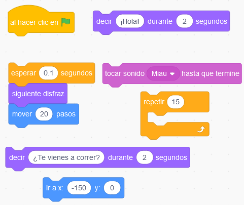
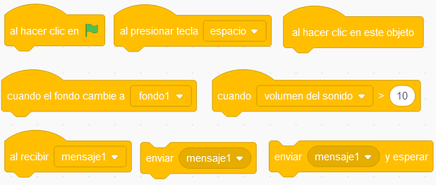
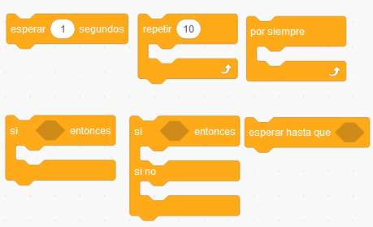
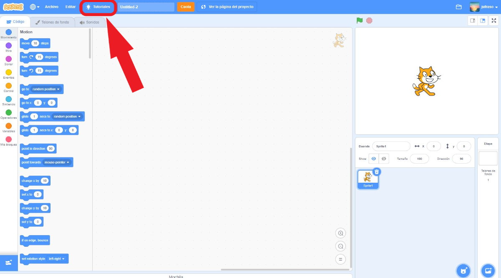

En todos los lenguajes las palabras necesitan un orden determinado para poder ser entendidos. Para poder comunicarnos con nuestro ordenador necesitamos conocer una estructura del lenguaje computacional de forma que el ordenador lo intérprete correctamente.
En los lenguajes de programación los bloques de código también necesitan un orden.
Ordenando el código
Para que veas lo importante que es el orden, necesito que ordenes los siguientes bloques para que un personaje que elijas, con un fondo determinado, realice las siguientes acciones:
- Comienza con el bloque al hacer clic en bandera verde.
- Que comience en la coordenada X=-150, Y=0 y se desplace por el fondo.
- Que diga las siguientes frases: ¡Hola!. ¿Te vienes a correr?.
- Que cambie de disfraz, durante la carrera.
- Que emita algún sonido el objeto, al llegar al final de la carrera.
Para ello vamos a ordenar los siguientes bloques.

Lumen dice ¿Necesitas ayuda para ordenarlos?
Abre Scratch y ver dentro para observar los bloques del código.
El concepto de algoritmo
Esto que acabas de hacer en el apartado anterior, es un algoritmo. El algoritmo es una de las herramientas fundamentales para la programación y se puede definir como "Un conjunto ordenado de operaciones sistemáticas que permite hacer un cálculo y hallar la solución de un tipo de problemas".
Hay 3 características principales del algoritmo a partir de su definición:
- El objetivo esencial de un algoritmo es obtener un resultado específico.
- Un algoritmo implica varias instrucciones ordenadas.
- El resultado se produce después de que el algoritmo finalice todo el proceso.
Kardia dice ¿Quieres saber más sobre los algoritmos?
Procedencia del nombre
Abu Abdallah Muḥammad ibn Mūsā al-Jwārizmī, conocido como al-Juarismi, y latinizado antiguamente como Algorithmi, fue un matemático, astrónomo y geógrafo persa. Fue astrónomo y jefe de la Biblioteca de Bagdad, alrededor de 820. Es considerado como uno de los grandes matemáticos de la historia.
¿Qué es un algoritmo?
Este video explica, de forma muy sencilla, qué es un algoritmo.
Sincronización
Cuando vamos a realizar un diálogo, no solo es importante tener ordenado la estructura de los algoritmos, necesitamos que los objetos se sincronicen, tal y como ocurre en un concierto de música donde los músicos deben saber el momento en el que tocar su instrumento o en una obra de teatro en la que los actores deben saber cuándo deben de intervenir.
Vamos a ver los bloques necesarios y técnicas más sencillas para la sincronización entre objetos y fondos.
Bloques de eventos
En este menú tenemos dos tipos de bloques, unos con forma de montañita "Al hacer clic en bandera verde, al presionar la tecla espacio, entre otros" que responden al cuando queremos que se ejecute el código que tienen debajo y otros bloques como “Enviar un mensaje, al recibir un mensaje y enviar mensaje y esperar”. Con estos bloques, lo que conseguiremos es enviar mensajes, que solo se van a ejecutar cuando los recibamos. Estos dos bloques van siempre juntos, ya que, si no enviamos un mensaje, no lo podemos recibir.

Bloques de control
Estos bloques nos permiten facilitar pausas en un determinado momento en el código, generando esperas, condiciones, que harán que uno o varios objetos puedan interactuar con ciertas reglas. Los bloques "repetir" (cuanto tiempo debe durar) y "por siempre" (mientras que se ejecute el programa), repiten todo lo que tienen dentro.
Las instrucciones de los bloques "si-entonces", "si-entonces-si no" y "esperar hasta que-". Se encarga de controlar cuando se ejecutan los bloques dentro de ellos. Por ejemplo el bloque Si-Entonces tiene una pregunta conocida como condición la pregunta debe tener una respuesta cierta o falsa en cuyo caso se ejecutarían los bloques a partir del si no.

Por mensajes
En este vídeo se muestra cómo hacer historias que interactúan con el usuario y cómo se sincronizan las instrucciones mediante el envío de mensajes. Podemos observar la sincronización de los fondos y los objetos.
Por condicionales
En la elaboración del diálogo introduciremos los bloques bucles o condicionales, que nos permiten repetir movimientos, apariencia o sonidos durante un tiempo o condición a lo largo de la historia. Aunque en el reto final no sea necesario el uso de condicionales si se pueden emplear. Te atreves a aplicarlos para intentar sincronizar, el diálogo, utilizándolos.
Kardia dice ¿Quieres poder saber algo más?
Tutoriales
Y no olvidemos que podemos recurrir a los tutoriales del portal de Scratch.

Tutorial sobre una historia
Puedes ampliar información, pulsando sobre la imagen, con el tutorial de Scratch para una historia en donde puedes ver todo el proceso.
El guion para los personajes
Una de las estrategias que se suele utilizar en programación para construir el guion de un programa es utilizar un pseudocódigo, que es una manera de diseño previo al código, pero con la estructura propia del lenguaje humano en lugar del lenguaje máquina.
En la siguiente actividad vamos a escribir un chiste con los bloques en Scratch, pero antes de ponernos a programarlos vamos a darle forma de guion para redactar como hablarían los personajes. Es importante que veas un ejemplo de un pseudocódigo:
| Bloques del personaje Avery |
Bloques del personaje Dee |
|
1A-Iniciar pulsando la tecla espacio; -Decir "¡Hola, buenos días!" durante "5" segundos; -Siguiente disfraz; Se da paso a Dee-Enviar "mensaje1"; |
1D-Al recibir "mensaje1"; -Cambiar disfraz a "john-c"; -Decir "Hola" durante "5" segundos; -Cambiar disfraz a "john-a"; Se da paso a Avery-Enviar "mensaje2" y esperar; |
|
2A-Al recibir "mensaje2"; -Decir "A qué te dedicas?" durante "5" segundos; -Siguiente disfraz; -Enviar "mensaje3"; |
2D-Al recibir "mensaje3"; -Decir "Soy rockero" durante "5" segundos; -Cambiar disfraz a "john-b"; -Enviar "mensaje4"; |
|
3A-Al recibir "mensaje4"; -Decir "Wow, ¿cantas o tocas la guitarra en una banda?" durante "5" segundos; -Siguiente disfraz; -Enviar "mensaje5"; |
3D-Al recibir "mensaje5"; -Decir "No, junto rocas y las vendo" durante "5" segundos; -Cambiar disfraz a "john-verde"; |
Lumen dice ¿Necesitas ayuda con el pseudocódigo?
Para que puedas entender un poco mejor el Pseudocódigo te indicaremos algún detalle.
- No sé si habrás observado que cada instrucción está separada por un punto y coma.
- El número con la inicial en mayúscula (1A,1D,...) te indica el orden de intervención de cada personaje, seguidos de un guion que te indica el inicio de la instrucción en mayúscula.
- El entrecomillado es la parte variable, que puedes modificar, dentro de cada uno de los bloques de Scratch.